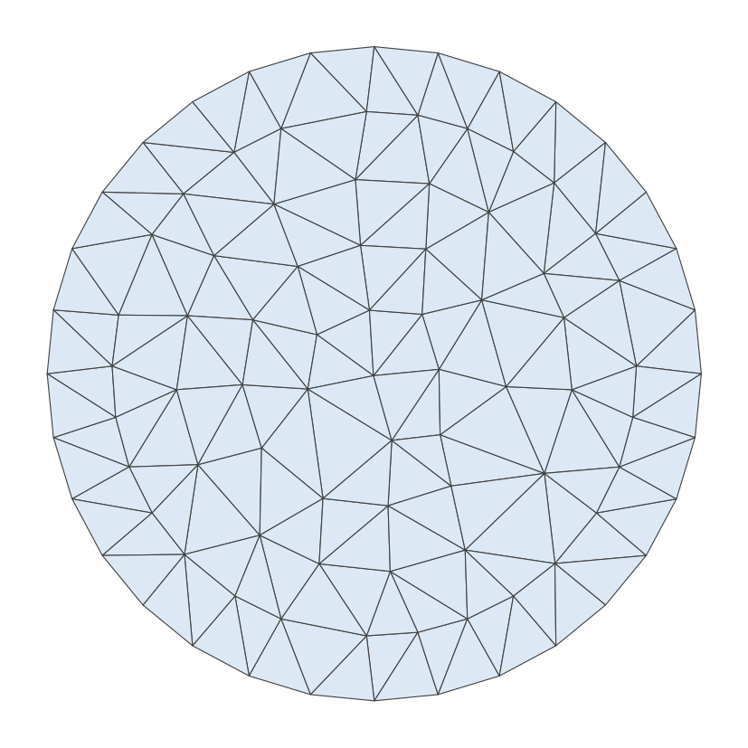
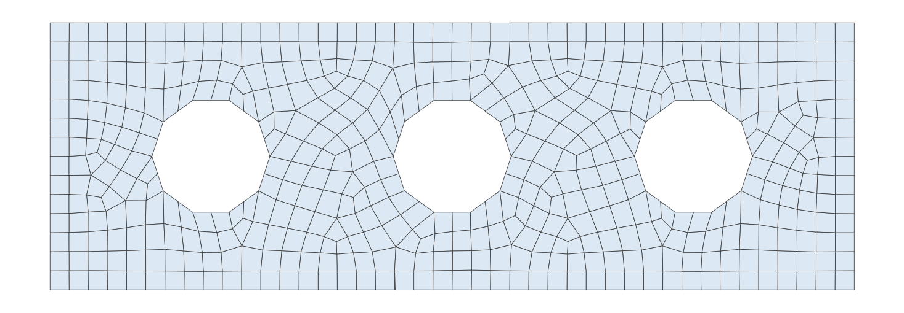

- boundaryThe input MeshGenerator defining the output outer boundary and required Steiner points.
C++ Type:MeshGeneratorName
Controllable:No
Description:The input MeshGenerator defining the output outer boundary and required Steiner points.
XYFrontalDelaunayGenerator
Triangulates meshes within boundaries defined by input meshes by advancing a front, which places points at a target size ahead of the triangles that are still too large.
Overview
XYFrontalDelaunayGenerator triangulates the planar region enclosed by an input boundary mesh, optionally around holes. It shares the boundary, hole and sizing parameters of XYDelaunayGenerator; the boundary layer, output_subdomain_id, smooth_triangulation, tri_element_type, interior_point_files, stitching algorithm and verbose_stitching parameters of that generator are not available here. It defines the region with "boundary" and "holes", limits the element size with "desired_area", "desired_area_func" or "use_auto_area_func", and names the result with "output_subdomain_name", "output_boundary" and "hole_boundaries". Consult that page for the meaning of those parameters, for how a boundary ring is read out of an input mesh, and for hole stitching. "interior_points" forces nodes at given interior locations; points outside the region are ignored.
What differs is how the interior points are chosen. Rather than refining a triangulation until every element meets the area limit, this generator advances a front (Rebay, 1993). A triangle counts as too large when its circumradius exceeds the circumradius targeted at its centroid. The edges those triangles share with the acceptable ones form the front. The front is advanced by placing one point at the target size ahead of an edge and inserting it with the Bowyer-Watson algorithm. Placing points at the size the mesh is meant to have, instead of subdividing until that size is reached, gives a triangulation whose element shapes are chosen rather than inherited.
The purpose of that control here is to feed TriToQuadConverter. Recombination merges pairs of adjacent triangles and scores the merge on how close the resulting internal angles are to (Remacle et al., 2012), so a triangulation biased toward right angles yields far more merges than an equilateral one.
The output consists of first-order TRI3 elements. The boundary input must also be first order, and the generator requires a replicated mesh.
Target Size Metric
"metric" selects the norm in which the target size ahead of the front is measured.
L2 measures the distance to the new point in the Euclidean norm, which is the conventional frontal-Delaunay choice and places points that make the triangles equilateral. It is the right choice when the triangles are the final mesh.
LINF measures it in the norm of a local frame (Remacle et al., 2013). Because the unit ball of that norm is a square rather than a circle, the placement favors triangles that are right isosceles in the frame, and two such triangles sharing their hypotenuse recombine into a near-square quadrilateral. This is the metric to use when TriToQuadConverter follows.
Local Frame Orientation
The norm is only defined once a local frame is fixed, and "orientation" supplies it. The parameter has no effect when "metric" is L2, which needs no frame.
BOUNDARY takes the frame from the tangent of the nearest boundary segment. It requires no solve, and it aligns the elements with the boundary where they meet it, but far from the boundary the nearest segment is a poor guide and the frame can turn abruptly between neighboring points.
CROSS_FIELD instead solves for a smooth four-fold direction field over the domain. A coarse background triangulation is built first; the boundary tangents are imposed on it in a representation under which four directions apart are the same value, that representation is smoothed by a Laplace solve, and the frame at any point is then interpolated from the background mesh. The field is boundary-aligned near the boundary and varies smoothly inside, which is what keeps the right isosceles triangles, and so the quadrilaterals that TriToQuadConverter later merges them into, aligned with each other across the interior.
A cross field cannot be smooth everywhere on every domain. It has singularities, points where the frame is undefined. The triangles placed around a singularity cannot all be aligned with each other, and a quadrilateral mesh recombined from them acquires a node there whose valence is not four. Those singularities are forced by the geometry, not by the solve: they arise where a boundary corner turns through an angle that is not a multiple of , and where the tangent of a curved boundary winds far enough that no smooth interpolation of the imposed directions exists in the interior. A circular boundary is the clearest case of the second kind.
A reentrant corner does not by itself force a singularity. The corner of a rectilinear L-shaped domain turns through , a multiple of , so the field passes through it without a defect and no irregular vertex is required: three quadrilaterals meeting at that corner is the regular configuration for it.
Example Syntax
Triangulating a disk. This input sets neither "metric" nor "orientation", so the elements come out right isosceles in the frame of a cross field solved over the disk:
[Mesh<<<{"href": "../../syntax/Mesh/index.html"}>>>]
[outer_bdy]
type = ParsedCurveGenerator<<<{"description": "This ParsedCurveGenerator object is designed to generate a mesh of a curve that consists of EDGE2, EDGE3, or EDGE4 elements.", "href": "ParsedCurveGenerator.html"}>>>
x_formula<<<{"description": "Function expression of x(t)"}>>> = 'r*cos(t)'
y_formula<<<{"description": "Function expression of y(t)"}>>> = 'r*sin(t)'
section_bounding_t_values<<<{"description": "The 't' values that bound the sections of the curve. Start and end points must be included. The number of entries in 'nums_segments' should be equal to one less than the number of entries in this parameter."}>>> = '${fparse 0.0} ${fparse pi} ${fparse 2.0*pi}'
constant_names<<<{"description": "Vector of constants used in the parsed function (use this for kB etc.)"}>>> = 'r'
constant_expressions<<<{"description": "Vector of values for the constants in constant_names (can be an FParser expression)"}>>> = '1.0'
nums_segments<<<{"description": "Numbers of segments (EDGE elements) of each section of the curve to be generated. The number of entries in this parameter should be equal to one less than the number of entries in 'section_bounding_t_values'"}>>> = '16 16'
is_closed_loop<<<{"description": "Whether the curve is closed or not."}>>> = true
[]
[triang]
type = XYFrontalDelaunayGenerator<<<{"description": "Triangulates meshes within boundaries defined by input meshes by advancing a front, which places points at a target size ahead of the triangles that are still too large.", "href": "XYFrontalDelaunayGenerator.html"}>>>
boundary<<<{"description": "The input MeshGenerator defining the output outer boundary and required Steiner points."}>>> = 'outer_bdy'
refine_boundary<<<{"description": "Whether to allow automatically refining the outer boundary."}>>> = false
desired_area<<<{"description": "Desired (maximum) triangle area, or 0 to skip uniform refinement"}>>> = 0.02
output_subdomain_name<<<{"description": "Subdomain name to set on new triangles."}>>> = 'triangles'
[]
[]
Figure 1: The disk triangulation of the input above. The advance places the points, so the triangles lean toward right isosceles shapes aligned with the cross field.
A domain containing a hole. The front advances from the hole boundary as well as from the outer boundary, and the name given in "hole_boundaries" is carried onto the sideset that the hole leaves behind:
[Mesh<<<{"href": "../../syntax/Mesh/index.html"}>>>]
[outer_bdy]
type = ParsedCurveGenerator<<<{"description": "This ParsedCurveGenerator object is designed to generate a mesh of a curve that consists of EDGE2, EDGE3, or EDGE4 elements.", "href": "ParsedCurveGenerator.html"}>>>
x_formula<<<{"description": "Function expression of x(t)"}>>> = 'r*cos(t)'
y_formula<<<{"description": "Function expression of y(t)"}>>> = 'r*sin(t)'
section_bounding_t_values<<<{"description": "The 't' values that bound the sections of the curve. Start and end points must be included. The number of entries in 'nums_segments' should be equal to one less than the number of entries in this parameter."}>>> = '${fparse 0.0} ${fparse pi} ${fparse 2.0*pi}'
constant_names<<<{"description": "Vector of constants used in the parsed function (use this for kB etc.)"}>>> = 'r'
constant_expressions<<<{"description": "Vector of values for the constants in constant_names (can be an FParser expression)"}>>> = '1.0'
nums_segments<<<{"description": "Numbers of segments (EDGE elements) of each section of the curve to be generated. The number of entries in this parameter should be equal to one less than the number of entries in 'section_bounding_t_values'"}>>> = '16 16'
is_closed_loop<<<{"description": "Whether the curve is closed or not."}>>> = true
[]
[inner_bdy]
type = ParsedCurveGenerator<<<{"description": "This ParsedCurveGenerator object is designed to generate a mesh of a curve that consists of EDGE2, EDGE3, or EDGE4 elements.", "href": "ParsedCurveGenerator.html"}>>>
x_formula<<<{"description": "Function expression of x(t)"}>>> = 'r*cos(t)'
y_formula<<<{"description": "Function expression of y(t)"}>>> = 'r*sin(t)'
section_bounding_t_values<<<{"description": "The 't' values that bound the sections of the curve. Start and end points must be included. The number of entries in 'nums_segments' should be equal to one less than the number of entries in this parameter."}>>> = '${fparse 0.0} ${fparse pi} ${fparse 2.0*pi}'
constant_names<<<{"description": "Vector of constants used in the parsed function (use this for kB etc.)"}>>> = 'r'
constant_expressions<<<{"description": "Vector of values for the constants in constant_names (can be an FParser expression)"}>>> = '0.35'
nums_segments<<<{"description": "Numbers of segments (EDGE elements) of each section of the curve to be generated. The number of entries in this parameter should be equal to one less than the number of entries in 'section_bounding_t_values'"}>>> = '6 6'
is_closed_loop<<<{"description": "Whether the curve is closed or not."}>>> = true
[]
[triang]
type = XYFrontalDelaunayGenerator<<<{"description": "Triangulates meshes within boundaries defined by input meshes by advancing a front, which places points at a target size ahead of the triangles that are still too large.", "href": "XYFrontalDelaunayGenerator.html"}>>>
boundary<<<{"description": "The input MeshGenerator defining the output outer boundary and required Steiner points."}>>> = 'outer_bdy'
holes<<<{"description": "The MeshGenerators that define mesh holes."}>>> = 'inner_bdy'
hole_boundaries<<<{"description": "Boundary names to set on holes. Default IDs are numbered up from 1 if no hole meshes are stitched; or from maximum boundary ID of all the stitched hole meshes + 2."}>>> = 'inner'
refine_boundary<<<{"description": "Whether to allow automatically refining the outer boundary."}>>> = false
refine_holes<<<{"description": "Whether to allow automatically refining each hole boundary."}>>> = 'false'
desired_area<<<{"description": "Desired (maximum) triangle area, or 0 to skip uniform refinement"}>>> = 0.02
output_subdomain_name<<<{"description": "Subdomain name to set on new triangles."}>>> = 'triangles'
[]
[]A polyline boundary with a reentrant corner, which the front reaches from two sides at once:
[Mesh<<<{"href": "../../syntax/Mesh/index.html"}>>>]
[outer_bdy]
type = PolyLineMeshGenerator<<<{"description": "Generates meshes from edges connecting a list of points.", "href": "PolyLineMeshGenerator.html"}>>>
points<<<{"description": "The points defining the polyline, in order"}>>> = '0.0 0.0 0.0
2.0 0.0 0.0
2.0 1.0 0.0
1.0 1.0 0.0
1.0 2.0 0.0
0.0 2.0 0.0'
loop<<<{"description": "Whether edges should form a closed loop"}>>> = true
[]
[triang]
type = XYFrontalDelaunayGenerator<<<{"description": "Triangulates meshes within boundaries defined by input meshes by advancing a front, which places points at a target size ahead of the triangles that are still too large.", "href": "XYFrontalDelaunayGenerator.html"}>>>
boundary<<<{"description": "The input MeshGenerator defining the output outer boundary and required Steiner points."}>>> = 'outer_bdy'
refine_boundary<<<{"description": "Whether to allow automatically refining the outer boundary."}>>> = true
desired_area<<<{"description": "Desired (maximum) triangle area, or 0 to skip uniform refinement"}>>> = 0.02
output_subdomain_name<<<{"description": "Subdomain name to set on new triangles."}>>> = 'triangles'
[]
[]The end-to-end use is the pipeline below, which triangulates the domain of the MBB beam (the Messerschmitt-Bölkow-Blohm beam, the rectangular benchmark domain of topology optimization) with three circular holes cut into it, and then recombines the result into quadrilaterals, collecting the triangles that could not be merged into their own subdomain so the yield can be measured:
[Mesh<<<{"href": "../../syntax/Mesh/index.html"}>>>]
[outer_bdy]
type = PolyLineMeshGenerator<<<{"description": "Generates meshes from edges connecting a list of points.", "href": "PolyLineMeshGenerator.html"}>>>
points<<<{"description": "The points defining the polyline, in order"}>>> = '0.0 0.0 0.0
3.0 0.0 0.0
3.0 1.0 0.0
0.0 1.0 0.0'
loop<<<{"description": "Whether edges should form a closed loop"}>>> = true
nums_edges_between_points<<<{"description": "How many Edge elements to build between each point pair. If a single value is given, it is applied to all segments. Otherwise, the number of entries must match the number of segments."}>>> = '21 7 21 7'
[]
[hole_left]
type = ParsedCurveGenerator<<<{"description": "This ParsedCurveGenerator object is designed to generate a mesh of a curve that consists of EDGE2, EDGE3, or EDGE4 elements.", "href": "ParsedCurveGenerator.html"}>>>
x_formula<<<{"description": "Function expression of x(t)"}>>> = 'x0 + r*cos(t)'
y_formula<<<{"description": "Function expression of y(t)"}>>> = 'y0 + r*sin(t)'
section_bounding_t_values<<<{"description": "The 't' values that bound the sections of the curve. Start and end points must be included. The number of entries in 'nums_segments' should be equal to one less than the number of entries in this parameter."}>>> = '${fparse 0.0} ${fparse pi} ${fparse 2.0*pi}'
constant_names<<<{"description": "Vector of constants used in the parsed function (use this for kB etc.)"}>>> = 'x0 y0 r'
constant_expressions<<<{"description": "Vector of values for the constants in constant_names (can be an FParser expression)"}>>> = '0.6 0.5 0.22'
nums_segments<<<{"description": "Numbers of segments (EDGE elements) of each section of the curve to be generated. The number of entries in this parameter should be equal to one less than the number of entries in 'section_bounding_t_values'"}>>> = '5 5'
is_closed_loop<<<{"description": "Whether the curve is closed or not."}>>> = true
[]
[hole_center]
type = ParsedCurveGenerator<<<{"description": "This ParsedCurveGenerator object is designed to generate a mesh of a curve that consists of EDGE2, EDGE3, or EDGE4 elements.", "href": "ParsedCurveGenerator.html"}>>>
x_formula<<<{"description": "Function expression of x(t)"}>>> = 'x0 + r*cos(t)'
y_formula<<<{"description": "Function expression of y(t)"}>>> = 'y0 + r*sin(t)'
section_bounding_t_values<<<{"description": "The 't' values that bound the sections of the curve. Start and end points must be included. The number of entries in 'nums_segments' should be equal to one less than the number of entries in this parameter."}>>> = '${fparse 0.0} ${fparse pi} ${fparse 2.0*pi}'
constant_names<<<{"description": "Vector of constants used in the parsed function (use this for kB etc.)"}>>> = 'x0 y0 r'
constant_expressions<<<{"description": "Vector of values for the constants in constant_names (can be an FParser expression)"}>>> = '1.5 0.5 0.22'
nums_segments<<<{"description": "Numbers of segments (EDGE elements) of each section of the curve to be generated. The number of entries in this parameter should be equal to one less than the number of entries in 'section_bounding_t_values'"}>>> = '5 5'
is_closed_loop<<<{"description": "Whether the curve is closed or not."}>>> = true
[]
[hole_right]
type = ParsedCurveGenerator<<<{"description": "This ParsedCurveGenerator object is designed to generate a mesh of a curve that consists of EDGE2, EDGE3, or EDGE4 elements.", "href": "ParsedCurveGenerator.html"}>>>
x_formula<<<{"description": "Function expression of x(t)"}>>> = 'x0 + r*cos(t)'
y_formula<<<{"description": "Function expression of y(t)"}>>> = 'y0 + r*sin(t)'
section_bounding_t_values<<<{"description": "The 't' values that bound the sections of the curve. Start and end points must be included. The number of entries in 'nums_segments' should be equal to one less than the number of entries in this parameter."}>>> = '${fparse 0.0} ${fparse pi} ${fparse 2.0*pi}'
constant_names<<<{"description": "Vector of constants used in the parsed function (use this for kB etc.)"}>>> = 'x0 y0 r'
constant_expressions<<<{"description": "Vector of values for the constants in constant_names (can be an FParser expression)"}>>> = '2.4 0.5 0.22'
nums_segments<<<{"description": "Numbers of segments (EDGE elements) of each section of the curve to be generated. The number of entries in this parameter should be equal to one less than the number of entries in 'section_bounding_t_values'"}>>> = '5 5'
is_closed_loop<<<{"description": "Whether the curve is closed or not."}>>> = true
[]
[triang]
type = XYFrontalDelaunayGenerator<<<{"description": "Triangulates meshes within boundaries defined by input meshes by advancing a front, which places points at a target size ahead of the triangles that are still too large.", "href": "XYFrontalDelaunayGenerator.html"}>>>
boundary<<<{"description": "The input MeshGenerator defining the output outer boundary and required Steiner points."}>>> = 'outer_bdy'
holes<<<{"description": "The MeshGenerators that define mesh holes."}>>> = 'hole_left
hole_center
hole_right'
refine_boundary<<<{"description": "Whether to allow automatically refining the outer boundary."}>>> = false
refine_holes<<<{"description": "Whether to allow automatically refining each hole boundary."}>>> = 'false false false'
desired_area<<<{"description": "Desired (maximum) triangle area, or 0 to skip uniform refinement"}>>> = 0.01
metric<<<{"description": "The norm the target size is measured in when a point is placed ahead of the front. 'L2' places points that make equilateral triangles. 'LINF' places points that make right isosceles triangles in the local frame, the shape that recombines into good quadrilaterals."}>>> = LINF
orientation<<<{"description": "Where the local frame the 'LINF' metric measures in comes from. 'CROSS_FIELD' solves for a cross field over the domain. 'BOUNDARY' takes the frame of the nearest boundary segment, which needs no solve. This parameter has no effect when metric is 'L2'."}>>> = CROSS_FIELD
output_subdomain_name<<<{"description": "Subdomain name to set on new triangles."}>>> = 'mbb'
[]
[to_quad]
type = TriToQuadConverter<<<{"description": "Converts a mesh consisting of TRI3 elements into a mesh consisting of QUAD4 elements, either by splitting every triangle into three quadrilaterals or by merging pairs of adjacent triangles.", "href": "TriToQuadConverter.html"}>>>
input<<<{"description": "The TRI3 mesh to convert into QUAD4 elements."}>>> = triang
algorithm<<<{"description": "The algorithm used to build the quadrilaterals. 'SUBDIVISION' splits every triangle into three quadrilaterals. 'RECOMBINE' merges pairs of adjacent triangles into quadrilaterals."}>>> = RECOMBINE
eta_min<<<{"description": "'RECOMBINE' algorithm only: the quality score eta = 1 - (2 / pi) max_k |pi / 2 - alpha_k| of the quadrilateral, in which alpha_k are its four internal angles, that a pair of adjacent triangles must reach to be merged. A rectangle scores 1 and a non-convex quadrilateral 0."}>>> = 0.3
[]
[smooth]
type = SmoothMeshGenerator<<<{"description": "Utilizes the specified smoothing algorithm to attempt to improve mesh quality.", "href": "SmoothMeshGenerator.html"}>>>
input<<<{"description": "The mesh we want to smooth."}>>> = to_quad
algorithm<<<{"description": "The smoothing algorithm to use."}>>> = laplace
[]
# Greedy matching breaks score ties by element id, so keep the ids stable across processor counts
allow_renumbering = false
[]
Figure 2: The MBB-beam domain meshed by this pipeline with "all_quad", recombined into quadrilaterals and smoothed.
References
- S. Rebay.
Efficient unstructured mesh generation by means of delaunay triangulation and Bowyer-Watson algorithm.
Journal of Computational Physics, 106(1):125–138, 1993.
doi:10.1006/jcph.1993.1097.[Export]
- J.-F. Remacle, F. Henrotte, T. Carrier-Baudouin, E. Béchet, E. Marchandise, C. Geuzaine, and T. Mouton.
A frontal delaunay quad mesh generator using the norm.
International Journal for Numerical Methods in Engineering, 94(5):494–512, 2013.
doi:10.1002/nme.4458.[Export]
- J.-F. Remacle, J. Lambrechts, B. Seny, E. Marchandise, A. Johnen, and C. Geuzaine.
Blossom-quad: a non-uniform quadrilateral mesh generator using a minimum-cost perfect-matching algorithm.
International Journal for Numerical Methods in Engineering, 89(9):1102–1119, 2012.
doi:10.1002/nme.3279.[Export]
Input Parameters
- add_nodes_per_boundary_segment0How many more nodes to add in each outer boundary segment.
Default:0
C++ Type:unsigned int
Controllable:No
Description:How many more nodes to add in each outer boundary segment.
- desired_area0Desired (maximum) triangle area, or 0 to skip uniform refinement
Default:0
C++ Type:Real
Unit:(no unit assumed)
Range:desired_area>=0
Controllable:No
Description:Desired (maximum) triangle area, or 0 to skip uniform refinement
- desired_area_funcDesired area as a function of x,y; omit to skip non-uniform refinement
C++ Type:std::string
Controllable:No
Description:Desired area as a function of x,y; omit to skip non-uniform refinement
- hole_boundariesBoundary names to set on holes. Default IDs are numbered up from 1 if no hole meshes are stitched; or from maximum boundary ID of all the stitched hole meshes + 2.
C++ Type:std::vector<BoundaryName>
Controllable:No
Description:Boundary names to set on holes. Default IDs are numbered up from 1 if no hole meshes are stitched; or from maximum boundary ID of all the stitched hole meshes + 2.
- holesThe MeshGenerators that define mesh holes.
C++ Type:std::vector<MeshGeneratorName>
Controllable:No
Description:The MeshGenerators that define mesh holes.
- input_boundary_names2D-input-mesh boundaries defining the output mesh outer boundary
C++ Type:std::vector<BoundaryName>
Controllable:No
Description:2D-input-mesh boundaries defining the output mesh outer boundary
- input_subdomain_names1D-input-mesh subdomains defining the output mesh outer boundary
C++ Type:std::vector<SubdomainName>
Controllable:No
Description:1D-input-mesh subdomains defining the output mesh outer boundary
- max_angle_deviation60Maximum angle deviation from the global average normal vector in the input mesh.
Default:60
C++ Type:Real
Unit:(no unit assumed)
Range:max_angle_deviation>0 & max_angle_deviation<90
Controllable:No
Description:Maximum angle deviation from the global average normal vector in the input mesh.
- output_boundaryBoundary name to set on new outer boundary. Default ID: 0 if no hole meshes are stitched; or maximum boundary ID of all the stitched hole meshes + 1.
C++ Type:BoundaryName
Controllable:No
Description:Boundary name to set on new outer boundary. Default ID: 0 if no hole meshes are stitched; or maximum boundary ID of all the stitched hole meshes + 1.
- output_subdomain_nameSubdomain name to set on new triangles.
C++ Type:SubdomainName
Controllable:No
Description:Subdomain name to set on new triangles.
- refine_boundaryTrueWhether to allow automatically refining the outer boundary.
Default:True
C++ Type:bool
Controllable:No
Description:Whether to allow automatically refining the outer boundary.
- refine_holesWhether to allow automatically refining each hole boundary.
C++ Type:std::vector<bool>
Controllable:No
Description:Whether to allow automatically refining each hole boundary.
- stitch_holesWhether to stitch to the mesh defining each hole.
C++ Type:std::vector<bool>
Controllable:No
Description:Whether to stitch to the mesh defining each hole.
- verboseFalseWhether the generator should output additional information
Default:False
C++ Type:bool
Controllable:No
Description:Whether the generator should output additional information
- verify_holesTrueVerify holes do not intersect boundary or each other. Asymptotically costly.
Default:True
C++ Type:bool
Controllable:No
Description:Verify holes do not intersect boundary or each other. Asymptotically costly.
Optional Parameters
- auto_area_func_default_size0Background size for automatic area function, or 0 to use non background size
Default:0
C++ Type:Real
Unit:(no unit assumed)
Controllable:No
Description:Background size for automatic area function, or 0 to use non background size
- auto_area_func_default_size_dist-1Effective distance of background size for automatic area function, or negative to use non background size
Default:-1
C++ Type:Real
Unit:(no unit assumed)
Controllable:No
Description:Effective distance of background size for automatic area function, or negative to use non background size
- auto_area_function_num_points10Maximum number of nearest points used for the inverse distance interpolation algorithm for automatic area function calculation.
Default:10
C++ Type:unsigned int
Controllable:No
Description:Maximum number of nearest points used for the inverse distance interpolation algorithm for automatic area function calculation.
- auto_area_function_power1Polynomial power of the inverse distance interpolation algorithm for automatic area function calculation.
Default:1
C++ Type:Real
Unit:(no unit assumed)
Range:auto_area_function_power>0
Controllable:No
Description:Polynomial power of the inverse distance interpolation algorithm for automatic area function calculation.
- use_auto_area_funcFalseUse the automatic area function for the triangle meshing region.
Default:False
C++ Type:bool
Controllable:No
Description:Use the automatic area function for the triangle meshing region.
Automatic Triangle Meshing Area Control Parameters
- enableTrueSet the enabled status of the MooseObject.
Default:True
C++ Type:bool
Controllable:No
Description:Set the enabled status of the MooseObject.
- save_with_nameKeep the mesh from this mesh generator in memory with the name specified
C++ Type:std::string
Controllable:No
Description:Keep the mesh from this mesh generator in memory with the name specified
Advanced Parameters
- interior_pointsInterior node locations. Any point outside the surface will not be meshed.
C++ Type:std::vector<libMesh::Point>
Controllable:No
Description:Interior node locations. Any point outside the surface will not be meshed.
Mandatory Mesh Interior Nodes Parameters
- metricLINFThe norm the target size is measured in when a point is placed ahead of the front. 'L2' places points that make equilateral triangles. 'LINF' places points that make right isosceles triangles in the local frame, the shape that recombines into good quadrilaterals.
Default:LINF
C++ Type:MooseEnum
Controllable:No
Description:The norm the target size is measured in when a point is placed ahead of the front. 'L2' places points that make equilateral triangles. 'LINF' places points that make right isosceles triangles in the local frame, the shape that recombines into good quadrilaterals.
- orientationCROSS_FIELDWhere the local frame the 'LINF' metric measures in comes from. 'CROSS_FIELD' solves for a cross field over the domain. 'BOUNDARY' takes the frame of the nearest boundary segment, which needs no solve. This parameter has no effect when metric is 'L2'.
Default:CROSS_FIELD
C++ Type:MooseEnum
Controllable:No
Description:Where the local frame the 'LINF' metric measures in comes from. 'CROSS_FIELD' solves for a cross field over the domain. 'BOUNDARY' takes the frame of the nearest boundary segment, which needs no solve. This parameter has no effect when metric is 'L2'.
Frontal Advance Parameters
- nemesisFalseWhether or not to output the mesh file in the nemesisformat (only if output = true)
Default:False
C++ Type:bool
Controllable:No
Description:Whether or not to output the mesh file in the nemesisformat (only if output = true)
- outputFalseWhether or not to output the mesh file after generating the mesh
Default:False
C++ Type:bool
Controllable:No
Description:Whether or not to output the mesh file after generating the mesh
- show_infoFalseWhether or not to show mesh info after generating the mesh (bounding box, element types, sidesets, nodesets, subdomains, etc)
Default:False
C++ Type:bool
Controllable:No
Description:Whether or not to show mesh info after generating the mesh (bounding box, element types, sidesets, nodesets, subdomains, etc)